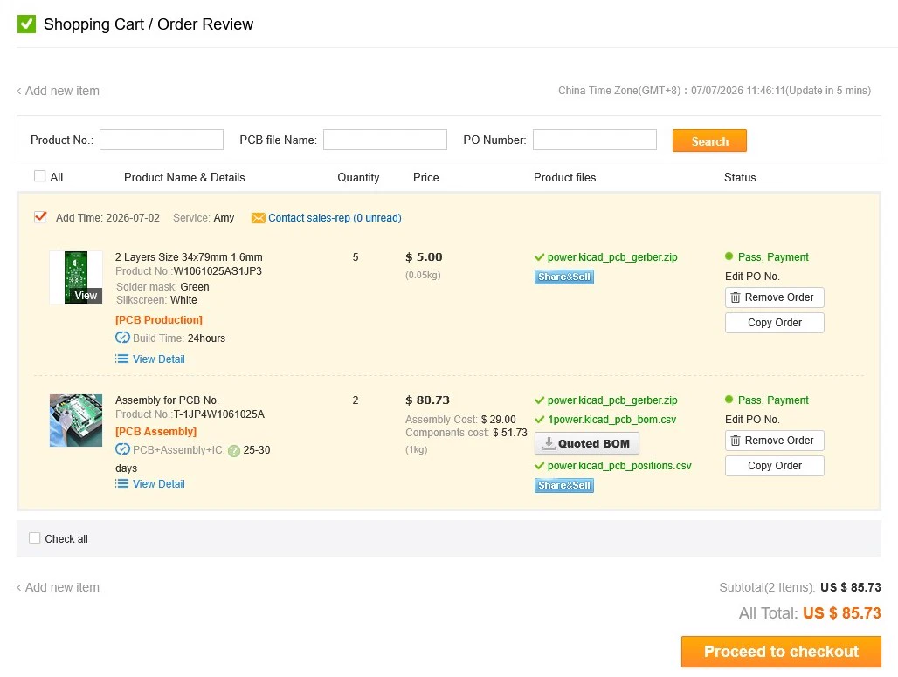
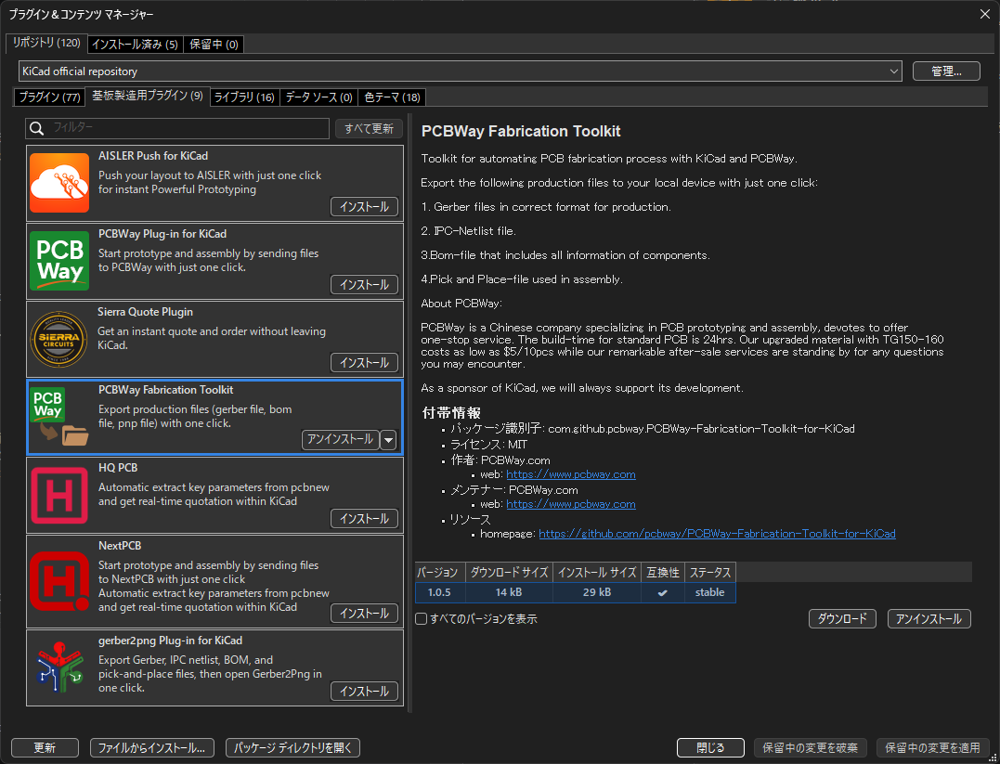
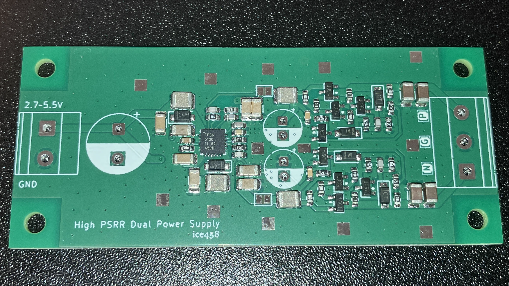
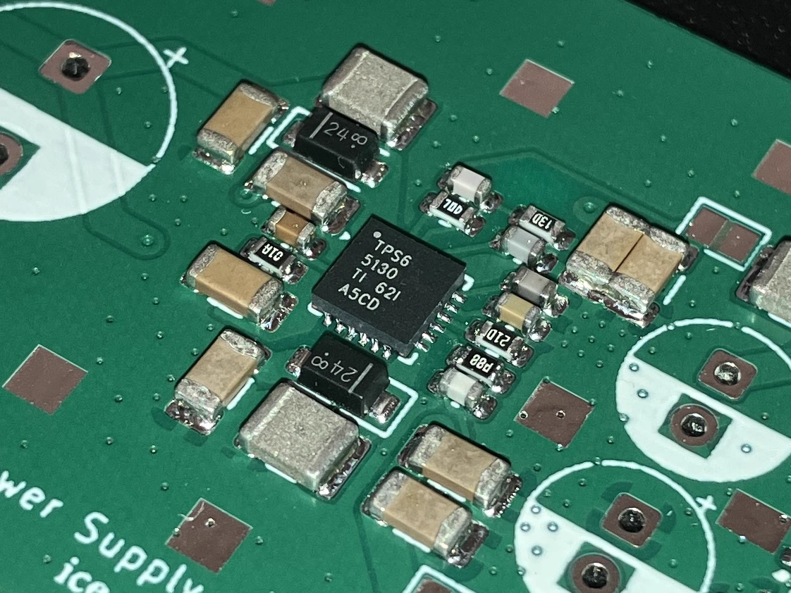
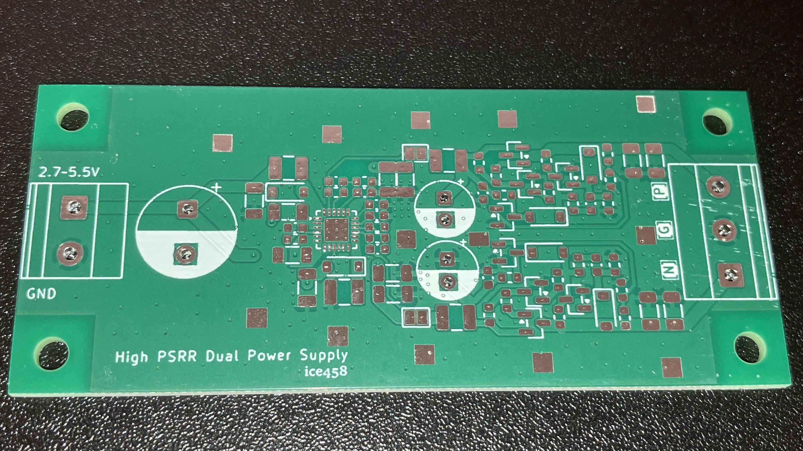
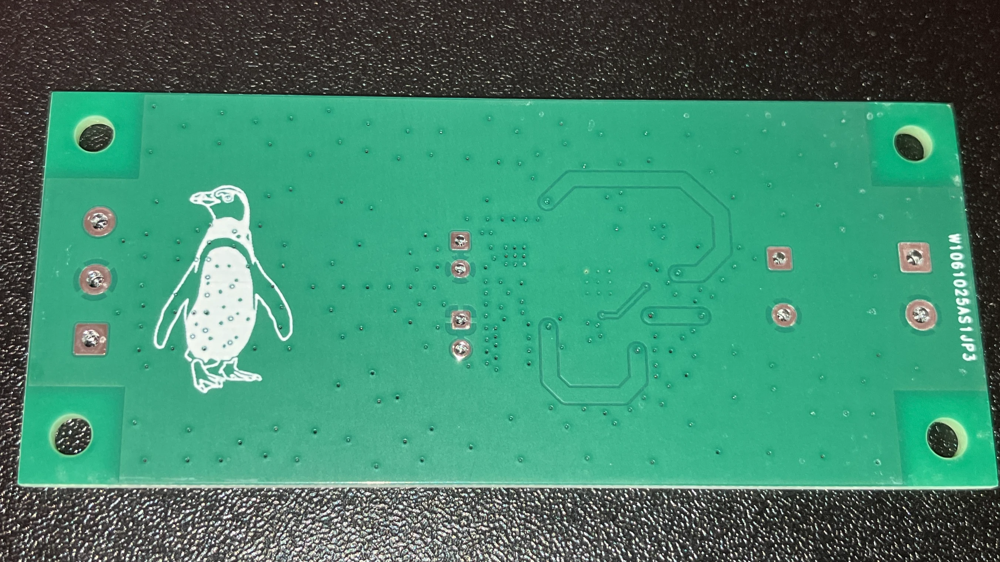

[PR] 本記事はPCBWayより基板製造・実装（PCBA）の無料枠（プロモーション）の提供を受けて作成しています
PCBWayよりPRで無料枠をいただいたので紹介記事です。今回はTPS65130を使った電源基板（PCBWayでのPCB製造＋PCBA組み立て）を対象に、スポンサーの申し出から基板到着までのやり取りと、実際に使ってみた感想をまとめます。
2026年4月1日、XのDMでPCBWayの担当者から「サイト上のプロジェクトを見て、次回作のPCBプロトタイプをスポンサーしたい」という申し出があった。当時は具体的な予定がなかったため、いったん次回のプロジェクトができたタイミングで改めて連絡する旨を伝え、あわせてスポンサー制度の条件を確認した。
翌4月2日に回答があり、要点は以下の通りだった。
この条件で問題ないと回答し、プロジェクトができ次第連絡することにした。
2026年6月14日、TPS65130とディスクリートLDOを用いたデュアル電源基板（2層、34mm×79mm、PCBA込み）の設計が完了したため、スポンサーの件で連絡した。返信が滞っていたが、こちらから再度連絡したところ改めて手続きを進めてもらえることになった。
7月2日、PCBWayのオンライン注文フォームから見積もりを作成し（支払いは不要）、Product Numberを担当者にメールする流れの案内を受けた。あわせて配送先住所の登録も必要とのこと。
日本から発注する場合、End-Use Statement（誓約書）の提出が必要になる。カートに追加して手続きを進めようとしたところ「Please contact a sales representative」と表示されて先に進めなくなり、担当の営業から改めて連絡が来る仕組みだった。実際にはサポートからのメールで案内があり、誓約書とパスポートのコピーを送付することで解決した。書類提出自体はやや手間だったが、案内は具体的でスムーズに完了した。
審査通過後、PCBA担当の営業(DMとは別の方)と部品の価格・調達先を確認し、7月7日に見積もりを確定。この時点でのカート画面は以下の通り。

カート画面。PCB本体(2層 34×79mm、5枚)が$5.00、PCBA(2枚)が$80.73(内訳: Assembly Cost $29.00 + Components cost $51.73)で、合計$85.73
PCB自体は5枚で$5.00と安価な一方、PCBAは部品代とアセンブリ費用が乗るため2枚で$80.73となり、合計$85.73だった。この金額はスポンサーの予算(送料込みUS$100以内)に収まったため、全額スポンサーとしてクレジットが付与され、支払いを行った。SMT（PCBA）注文は配送料が最大US$30割引になるとのことで、配送業者はFedExとOCSから選択できた。支払い後は特に問題なく製造工程に入り、7月31日に基板が到着した。
PCBAの部品確認では、KiCadから出力したBOMをもとに、PCBWay側で調達可能な部品・単価を当てはめたシートを送り返してもらい、内容を確認するという流れだった。
BOMの出力にはKiCadのプラグイン&コンテンツマネージャーからインストールできるPCBWay関連のプラグインを使った。PCBWay提供のプラグインには2種類あり、「PCBWay Plug-in for KiCad」と、「PCBWay Fabrication Toolkit」がある。今回は後者のFabrication Toolkitを使い、出力したBOM(CSV)をWebサイトにアップロードした。

KiCadのプラグイン&コンテンツマネージャー。PCBWay関連のプラグインは2種類あり、今回は画像中で選択されている「PCBWay Fabrication Toolkit」を使用した
標準的な内容に加え、MPN(型番)とManufacturerの列が必要な模様。実際の行の例を2つ抜粋する。
| Designator | Quantity | Value | Footprint | Package | MPN | DNP | Mount_Type | Description | KiLib_Generator | Manufacturer | Sim.Device | Sim.Pins |
|---|---|---|---|---|---|---|---|---|---|---|---|---|
| C53, C58 | 2 | 1n | C_0603_1608Metric | GRM1885C1H102JA01D | smt | Unpolarized capacitor | SMD_2terminal_chip_molded | Murata Electronics | ||||
| U11 | 1 | TPS65130RGE | VQFN-24-1EP_4x4mm_P0.5mm_EP2.45x2.45mm_ThermalVias | TPS65130 | smt | Split-Rail Converter with Dual, Positive and Negative Outputs (300mA typ, Switch Current Limit 800mA typ), 2.7-5.5V, VQFN-24 | package/no_lead | Texas Instruments |
このCSVを送ると、PCBWay側で仕入れ可能な部品と単価を当てはめたExcel(xls)形式の確認シートが返送されてくる。列としては品番・数量・メーカー・型番に加え、単価・納期・実際に仕入れる型番・PCBWay側からの注記・こちらの回答欄などが追加されている。以下は実際に返ってきたシートからの抜粋で、2行目は電解コンデンサを手はんだ実装用にDNP(部品未実装)指定した例。PCBWay側から「DNP不要贴(=貼り付け不要)」という注記が付き、"Customer Reply"欄に"DNP"と記入して確認・返信した。
| Item # | Designator | Qty | Manufacturer | Mfg Part # | Description / Value | Package/Footprint | Mounting Type | Your Instructions / Notes | Unit Price(2 units) | Total | Delivery Time | Actual Purchase Mfg Part # | PCBWay Note | Customer Reply | PCBWay Update |
|---|---|---|---|---|---|---|---|---|---|---|---|---|---|---|---|
| 1 | C53, C58 | 2 | Murata Electronics | GRM1885C1H102JA01D | 1n / Unpolarized capacitor / SMD_2terminal_chip_molded | C_0603_1608Metric | smt | $0.189 | $0.756 | ||||||
| 2 | C54 | 1 | 22u / Polarized capacitor / capacitor/THT/other | CP_Radial_D6.3mm_P2.50mm | tht | Yes | [DNP不要贴]; | DNP |
型番まで明記したBOMさえ渡せば、あとは金額・納期・DNP指定などを確認して返信するだけで済むので、部品調達にかかる手間はほとんどなかった。
今回発注したのは、TPS65130（デュアル昇降圧コンバータ）とディスクリートLDOを組み合わせた電源モジュール。2層基板・34mm×79mmで、PCBA込みで発注した。

実装済みの基板。TPS65130周辺のインダクタやMLCCもきれいに収まっている

TPS65130（QFN）周辺のクローズアップ。1608Mサイズの部品も含め実装精度は良好
今回は5枚製造、2枚PCBAありでの発注のため、未実装の基板も3枚同梱されていた。イラストのシルクはやや滲むが通常の文字は全く良好。

未実装基板（表面）

イラストを入れた基板裏面
基板のパターン精度、シルクの品質ともに問題なく、PCBAの実装も部品の向き・はんだ付けともにきれいに仕上がっていた。今回のような細かいピッチのQFNパッケージや小型受動部品が混在する基板でも不良は見当たらなかった。
部品調達については、型番さえ指定しておけば手配は基本的にPCBWay側に任せられるのが便利だった。個人で少量の部品を複数の販社から集めるのは地味に手間がかかる作業なので、この点はPCBAを頼む大きなメリットだと感じた。
サポート対応も総じて丁寧で、質問への回答や見積もり・支払いの案内はいずれも具体的でわかりやすかった。日本からの発注特有の手続きとしてEnd-Use Statementの提出が必要になった点は面倒ではあったものの、対応自体はスムーズだった。
普段JLCPCBを使うことが多いが、そちらと比較すると価格は高め。ただしPCBAの部品調達を任せられる利便性やサポートの手厚さを踏まえると、その分の価値はあると感じた。基板単体で気軽に頼むというよりは、PCBAまで含めてまとめて任せたいときに向いている印象。
今回スポンサーいただいたPCBWayへのリンク